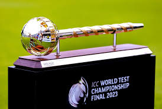
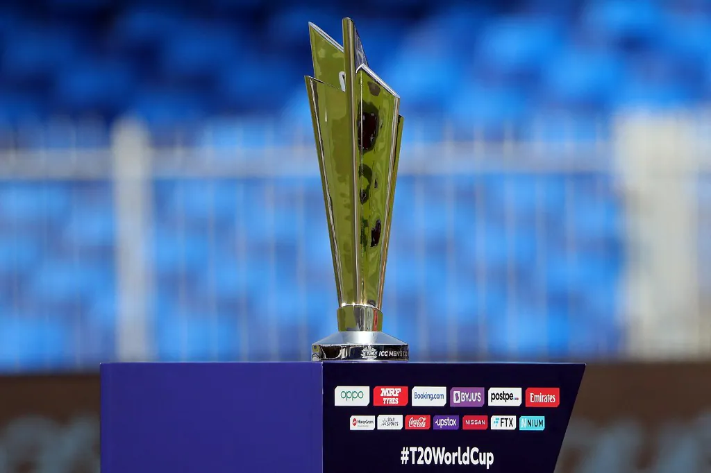

World Cups
The 3 main tournaments in cricket are the Cricket World Cup, the World Test Championship, and the T20 World Cup.
Cricket World Cup

The Cricket World Cup is the most important tournament in cricket and is played in the One Day International (ODI) format. The tournament is organised by the International Cricket Council (ICC) and features teams from around the world. The Cricket World Cup is played every 4 years. The first Cricket World Cup was held in 1975, and the inaugural trophy was won by West Indies.
World Test Championship

The World Test Championship is a tournament for the top ICC-ranked Test teams. The final happens every two years. The inaugural WTC was held in 2021, and the first ever cup was won by New Zealand.
T20 World Cup

The T20 World Cup is a tournament for 20 teams, including top-ranked nations and associate nations. It is played in the 20-over format. The tournament happens every two years, allowing smaller nations to compete against stronger teams. The first T20 World Cup was held in 2007, and India won the inaugural title.